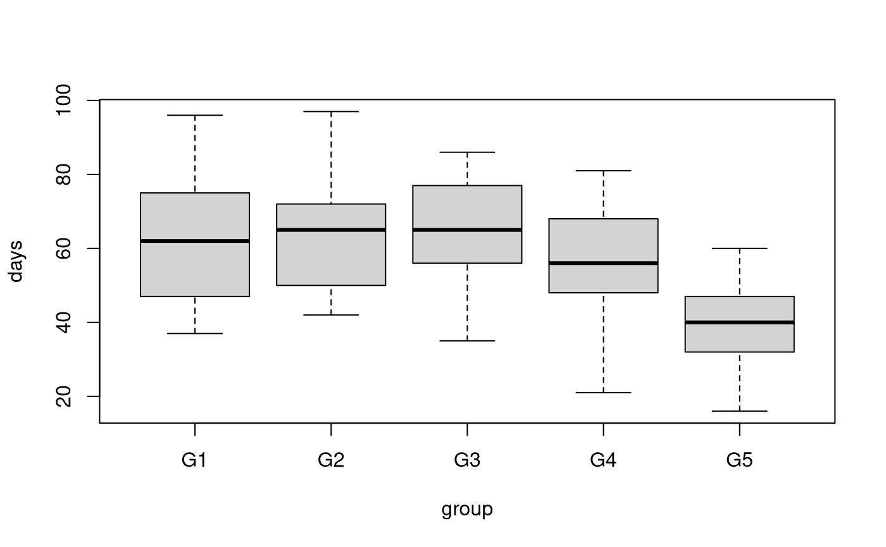
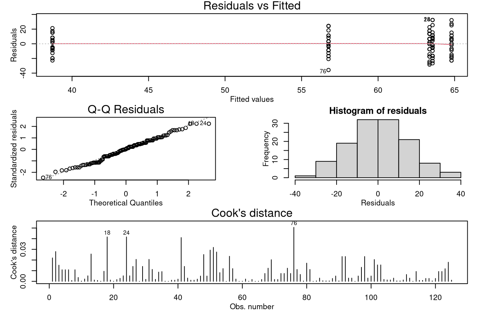

Problem:
In this study, we look at how the male fruit-flies longevity is related to reproductive activity. (Data is described in more detail here)
How does one define “interest” in fruit-flies? Here is this study’s definition:
Newly inseminated females will not usually mate again for at least two days.
So the males in the uninterested groups were always living with newly inseminated females!
The hypothesis was that the males living alone and with the uninterested females would live longer than the males living with the interested females. Since there are more than two group means, a one-way ANOVA is used to determine if there is a significant difference between the group means.
The design of the study placed male fruit-flies in the following groups:
- Males living alone,
- Males living with one interested female,
- Males living with eight interested females,
- Males living with one uninterested female, and
- Males living with eight uninterested females.
The variables of interest were:
-
days: A male fruitfly’s longevity in days. -
group: A five-level factor with the levels which corresponds to the group a male fruitfly is in:- “G1”: males living alone,
- “G2”: males with one interested female,
- “G3”: males with eight interested females,
- “G4”: males with one uninterested female,
- “G5”: males with eight uninterested females,
Read in and Inspect the Data
Fruitfly.df = read.csv("Fruitfly.csv", stringsAsFactors = TRUE)
plot(days ~ group, data = Fruitfly.df)
summaryStats(days ~ group, Fruitfly.df)
## Sample Size Mean Median Std Dev Midspread
## G1 25 63.56 62 16.45215 28
## G2 25 64.80 65 15.65248 22
## G3 25 63.36 65 14.53983 21
## G4 25 56.76 56 14.92838 20
## G5 25 38.72 40 12.10207 15Our hypothesis that the males living alone and with the uninterested females would live longer than the males living with the interested females does not seem plausible with our data.
Model Building and Check Assumptions
ff.fit = lm(days ~ group, data = Fruitfly.df)
modelcheck(ff.fit)
anova(ff.fit)## Analysis of Variance Table
##
## Response: days
## Df Sum Sq Mean Sq F value Pr(>F)
## group 4 11939 2984.82 13.612 3.516e-09 ***
## Residuals 120 26314 219.28
## ---
## Signif. codes: 0 '***' 0.001 '**' 0.01 '*' 0.05 '.' 0.1 ' ' 1
summary(ff.fit)##
## Call:
## lm(formula = days ~ group, data = Fruitfly.df)
##
## Residuals:
## Min 1Q Median 3Q Max
## -35.76 -8.76 0.20 11.20 32.44
##
## Coefficients:
## Estimate Std. Error t value Pr(>|t|)
## (Intercept) 63.560 2.962 21.461 < 2e-16 ***
## groupG2 1.240 4.188 0.296 0.768
## groupG3 -0.200 4.188 -0.048 0.962
## groupG4 -6.800 4.188 -1.624 0.107
## groupG5 -24.840 4.188 -5.931 2.98e-08 ***
## ---
## Signif. codes: 0 '***' 0.001 '**' 0.01 '*' 0.05 '.' 0.1 ' ' 1
##
## Residual standard error: 14.81 on 120 degrees of freedom
## Multiple R-squared: 0.3121, Adjusted R-squared: 0.2892
## F-statistic: 13.61 on 4 and 120 DF, p-value: 3.516e-09Multiple Comparisons Output
## Welcome to emmeans.
## Caution: You lose important information if you filter this package's results.
## See '? untidy'
Fruitfly.emm = emmeans(ff.fit, ~group)
# View all pairwise comparisons:
pairs(Fruitfly.emm, infer = TRUE)## contrast estimate SE df lower.CL upper.CL t.ratio p.value
## G1 - G2 -1.24 4.19 120 -12.84 10.4 -0.296 0.9983
## G1 - G3 0.20 4.19 120 -11.40 11.8 0.048 1.0000
## G1 - G4 6.80 4.19 120 -4.80 18.4 1.624 0.4854
## G1 - G5 24.84 4.19 120 13.24 36.4 5.931 <0.0001
## G2 - G3 1.44 4.19 120 -10.16 13.0 0.344 0.9970
## G2 - G4 8.04 4.19 120 -3.56 19.6 1.920 0.3127
## G2 - G5 26.08 4.19 120 14.48 37.7 6.227 <0.0001
## G3 - G4 6.60 4.19 120 -5.00 18.2 1.576 0.5158
## G3 - G5 24.64 4.19 120 13.04 36.2 5.883 <0.0001
## G4 - G5 18.04 4.19 120 6.44 29.6 4.307 0.0003
##
## Confidence level used: 0.95
## Conf-level adjustment: tukey method for comparing a family of 5 estimates
## P value adjustment: tukey method for comparing a family of 5 estimates
# View only the comparisons that are significant at the 5% level:
Fruitfly.pairs = data.frame(pairs(Fruitfly.emm, infer = TRUE))
subset(Fruitfly.pairs, p.value < 0.05)## contrast estimate SE df lower.CL upper.CL t.ratio p.value
## 4 G1 - G5 24.84 4.188358 120 13.239532 36.44047 5.930724 2.958395e-07
## 7 G2 - G5 26.08 4.188358 120 14.479532 37.68047 6.226783 7.232306e-08
## 9 G3 - G5 24.64 4.188358 120 13.039532 36.24047 5.882973 3.701044e-07
## 10 G4 - G5 18.04 4.188358 120 6.439532 29.64047 4.307177 3.240300e-04Methods and Assumption Checks
The boxplot of days by group indicated that
males living with 8 uninterested females have shorter lives compared to
their counterparts in other groups. So, we fitted a One-way ANOVA model
to these data.
The model assumptions seem satisfied.
Our final model is where is 1 if the th male fruitfly is in group and 0 otherwise, and .
Alternatively, our final model could be written as where is the overall mean survival time and is the effect of being in the th group and .
Our model explained 31% of variability in male fruitfly longevity.
Executive Summary
Researchers were interested in how sexual activity affects male fruitfly longevity.
We see that the effect of Group 5, males with 8 uninterested females, seems markedly different from all the others.
In particular group 5 males, on average, lived fewer days than:
- Group 1 males (living alone) by between 13 to 36 fewer days.
- Group 2 males (living with one interested female) by between 14 to 38 fewer days.
- Group 3 males (living with eight interested females) by between 13 to 36 fewer days.
- Group 4 males (living with one uninterested female) by between 6 to 30 fewer days.
On a lighter note these male fruit flies are fine if no females are about or if they are there they need to be ‘interested’ in them — otherwise they die earlier (they ‘drop like flies’). It’s tempting to make similar inference about the human species but that may be going too far!